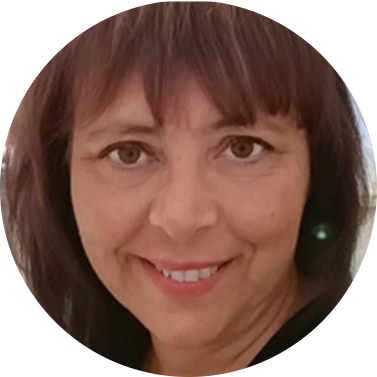

"Dream big, work hard, and never give up." "Sogna in grande, lavora duro e non arrenderti mai."
|  | Monica Quagliotto, nata nel 1963, è una professionista con un percorso formativo e lavorativo che unisce passione, esperienza e continua ricerca dell’eccellenza. Dopo il diploma di Liceo Scientifico, ha studiato Lettere Moderne presso l'Università degli Studi di Torino, arricchendo la sua formazione con corsi di specializzazione in ambito educativo e didattico, con un focus particolare su DSA e ADHD. Nel 2018 ha ottenuto il titolo di Arte Terapista, integrando l’aspetto creativo nel supporto all’apprendimento. Nel 2024 ha coronato un percorso triennale in discipline olistiche, conseguendo il titolo di Operatore Olistico Professional con una tesi dedicata all’applicazione dell’approccio olistico nell’insegnamento a bambini con difficoltà specifiche. Tra i soci fondatori dell'Associazione Italiana Tutor, Monica promuove la definizione e il riconoscimento del ruolo del Tutor dell’Apprendimento. Attualmente dirige un’associazione che offre assistenza allo studio e laboratori strutturati, tra cui arteterapia, teatro, meditazione e lingue straniere. La sua vision è incentrata sulla valorizzazione della persona e della sua unicità, promuovendo una crescita interiore che rafforzi autostima, consapevolezza di sé e autonomia. Crede in un approccio metacognitivo e creativo che consenta ai ragazzi di sviluppare strategie efficaci, raggiungere l’indipendenza e scoprire il loro potenziale unico. |
Mi sono sempre approcciata a ciò che non conosco con umiltà e interesse, motivo per cui la mia formazione professionale è sempre in aggiornamento
Il mio obiettivo è il raggiungimento del miglior risultato possibile per me e i miei ragazzi
Punto a mettermi sempre in dicussione per approcciarmi in maniera onesta alla vita e al lavoro, puntando al miglioramento costante
Il carburante che mi permette di continuare a fare questo mestiere con la stessa determinazione e professionalità è direttamente il mio cuore!
Monica è uno dei soci fondatori della prima Associazione Nazionale di Categoria dei Tutor dell'Apprendimento, fondata da Patrizia Messina.
In linea con i principi di AIT, Monica crede fortemente nel progetto di rendere giustizia al mestiere di Tutor professionista, ad oggi ancora poco conosciuto e spesso mal interpretato. La figura del Tutor è infatti completamente diversa da quella di un ripetitore. L'obiettivo di Monica è quello, infatti, di aiutare a definire di cosa si occupi con esattezza questa figura importantissima nel campo del supporto allo studio, facendo tesoro dei servizi e delle consulenze di gruppo fornite dalla stessa AIT.
AIT attua una supervisione costante di tutti i tutor dell'apprendimento presenti su suolo nazionale, coordinandone l'operato e i valori. Garantisce, in questo modo, che tutti i tutor italiani vengano innanzitutto riconosciuti come professionisti, e in più che rimangano sempre aggiornati e formati sul mestiere che esercitano, al fine di rispettare le aspettative e le necessità dei loro clienti.

Monica è la presidente dell'associazione culturale Verba Volant, finalizzata al tutoraggio e potenziamento allo studio in individui con difficoltà di apprendimento quali DSA e ADHD.
Verba Volant, gestita da Monica, opera in linea con i principi di AIT, e ad oggi vanta 10 tutor specializzati e 50 ragazzi tesserati che contano sulla professionalità dei tutor al fine di godere di una supervisione e un sostegno allo studio basato su un metodo personalizzato per loro. Il motto di Verba Volant è infatti "Noi siamo diversi, noi siamo unici" , frase che racchiude tutti i princìpi su cui si fonda l'associazione. La principale accortezza di ogni tutor che opera presso Verba Volant è infatti quella di considerare la diversità dei ragazzi non come un fattore negativo, bensì come segno di unicità che deve essere rispettato, accolto e trattato tramite il ricorso a metodi costruiti ad hoc, ovvero mettendo in campo l'unico approccio che garantisce la valorizzazione delle peculiarità di ognuno.
Il punto di forza dell'associazione è la comunicazione e la cooperazione tra i tutor specializzati, caratteristiche essenziali e che garantiscono una supervisione a 360 gradi del percorso personale e didattico dell'individuo.
I vari servizi che offre Verba Volant puntano a trovare rimedio alle difficoltà specifiche dell'individuo instaurando un rapporto di collaborazione tra il ragazzo, il tutor, la scuola e la famiglia, con l'obiettivo di condurlo verso una maggiore consapevolezza di sé e delle proprie difficoltà, in modo da avviarlo ad una gestione in totale autonomia.
Per maggiori informazioni in merito all'associazione Verba Volant:
ISH - Intensive Study Help di Monica Quagliotto Via Turello Milone 12 - 14019 Villanova d'Asti (AT) - Chiamate & WhatsApp: (+39) 3405005081 Email: ish.monicaquagliotto@gmail.com Pec: quagliotto.monica@pec.it P.IVA 01735240051